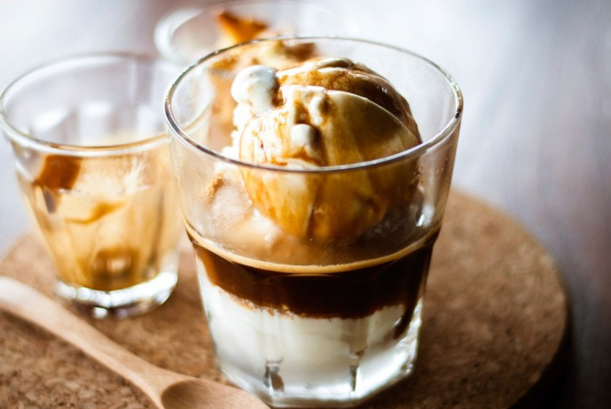

간편하고 맛좋은 간식 모음집
간단하고 맛있는 디저트는 삶의 질을 향상시킨다
아포가토

- 바닐라 아이스크림을 원하는 만큼 퍼서 컵에 담는다.
- 아이스크림과 커피 원액이 잘 어우러 질 수 있도록 아이스크림에 구멍이나 자국을 내준다
- 준비한 커피원액을 바닐라 아이스크림에 붓는다.
블루레몬에이드
- 스퀴저(주서기)에 레몬을 짠 후 레몬즙을 만든다
- 유리 잔에 블루 큐라소를 조금 부은 후 얼음을 넉넉히 넣는다.
- 탄산수나 사이다, 시럽을 뿌리고 레몬즙을 적당량 넣어준다